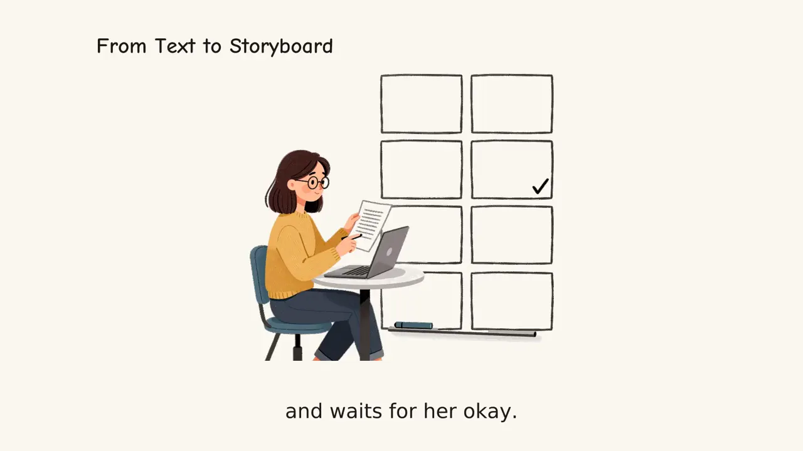

Automating Narrated Explainer Videos From Claude Code and Codex With MCP

Most AI video workflows still force you to copy text out of your editor, paste it into a browser tab, babysit a progress bar, and download the file back to your project folder. If you already write documentation, lesson plans or release notes inside an AI coding assistant such as Claude Code, OpenAI Codex or Cursor, the Model Context Protocol (MCP) removes that context switch. Your agent reads the local file, calls the remote video tools over HTTPS, polls until the render finishes, and hands you the published MP4 URL right in the terminal or chat.
How the remote MCP server and skill fit together
SpeedPainter exposes Explainer Video through two complementary pieces that work together without requiring you to manage third-party image, voice or rendering API keys:
- The remote MCP server (
https://api.speedpainter.org/mcp). Hosted over Streamable HTTP and secured with Google OAuth sign-in, it exposes the server-side tools that check your credit balance, start a render, inspect task progress and cancel jobs. - The open-source Agent Skill (
SpeedPainterOrg/explainer-video). Installed with a singlenpx --yes github:SpeedPainterOrg/explainer-videocommand, the installer automatically detects Claude Code and Codex and teaches the agent the default creative framing, duration limits (5 to 300 seconds) and polling sequence.
You can walk through the full setup on the SpeedPainter MCP skill guide. Because authentication happens through browser OAuth when the MCP connection initializes, you never paste a secret key into a repository or environment file, and your local source document is read by the agent on your machine rather than uploaded as a raw file.
The three-step tool lifecycle
In its default server-generated mode, the agent follows a deterministic asynchronous loop:
- Check balance (
get_explainer_credits). Verify that the connected account has enough credits for the requested duration before submitting a job. - Submit the task (
create_explainer_video). The agent extracts the key text (up to 20,000 characters) from your local Markdown doc, PDF, notes or URL and sends it along with target duration (default 60 s), aspect ratio (16:9, 9:16, 1:1 or 4:5), source or requested language, and burned subtitle preferences. - Poll to completion (
get_explainer_task). Because storyboard planning, hand-drawn scene generation, voice narration and subtitle burning take real rendering time, the agent polls the task ID until the status completes and returns the playable MP4 link and SRT caption file (or callscancel_explainer_taskto abort and automatically refund reserved credits).
When a project needs strict visual sign-off before final assembly, the skill also supports an advanced review mode where the agent generates and lets you inspect scene illustrations before the final render pass.
Budgeting credits across automated runs
Both Explainer Video and the image-to-video Speedpaint generator draw from one shared balance. Checking SpeedPainter pricing and credits before wiring an agent into a documentation or release pipeline helps you pick the right tier for your volume:
| Plan or Pack | Price (USD) | Included Credits | Notes |
|---|---|---|---|
| Free sign-up | $0 | 60 one-time credits | Watermarked preview exports; great for first MCP test |
| Starter | $19.90/mo ($199/yr) | 700/mo (8,400/yr) | Clean exports, shared across MCP and web |
| Plus | $39.90/mo ($399/yr) | 2,000/mo (24,000/yr) | Fits weekly course or product release pipelines |
| Ultra | $59.90/mo ($599/yr) | 4,000/mo (48,000/yr) | High-volume multi-language explainers |
| One-time credit packs | $29.90 / $49.90 / $99.90 | 1,000 / 3,000 / 8,000 | Pay-as-you-go top-ups without a recurring commitment |
Because failed or cancelled tasks return their reserved credits automatically, calling cancel_explainer_task whenever you spot a typo in your prompt keeps your automated runs mistake-proof. Teams that publish weekly release notes or bilingual documentation often keep a short prompt template in their repository so any contributor can ask Claude Code or Codex for a 60-second 16:9 overview and get back a consistent whiteboard explainer in minutes.